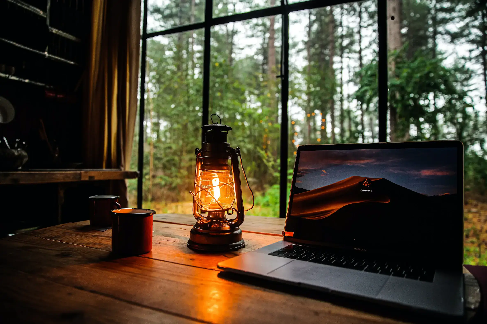

Задание 3
Создайте галерею переключения изображений. В ней будет две кнопки: вперёд и назад, которые должны переключать изображение (в галерее пока будет 2 картинки, но если можете больше, то делайте)

Назад
Вперед